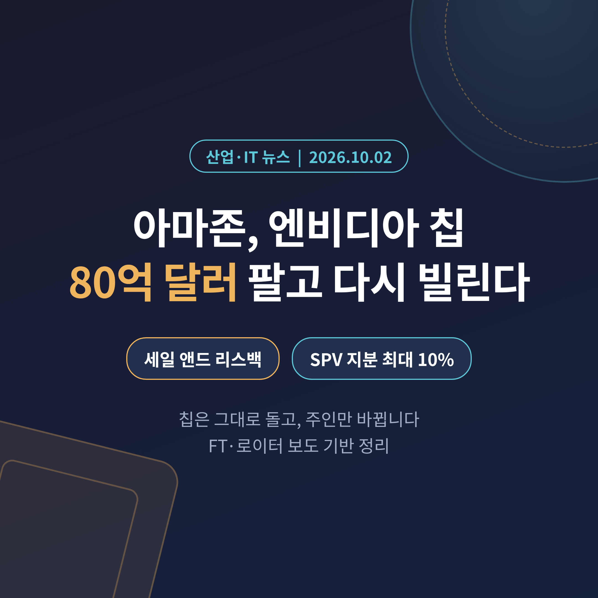
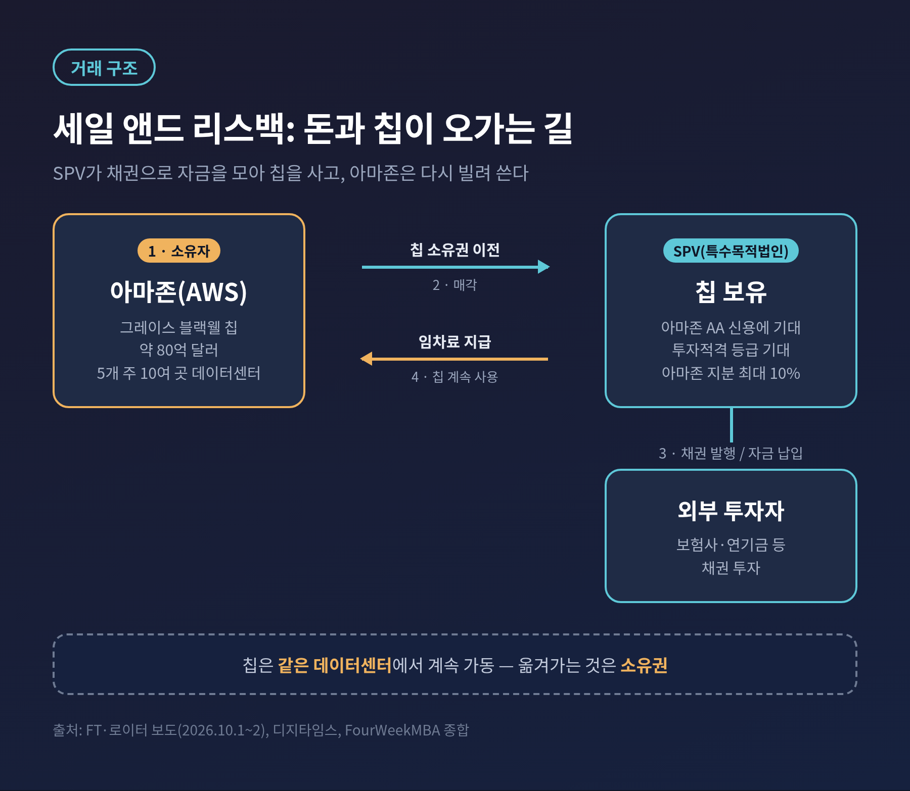
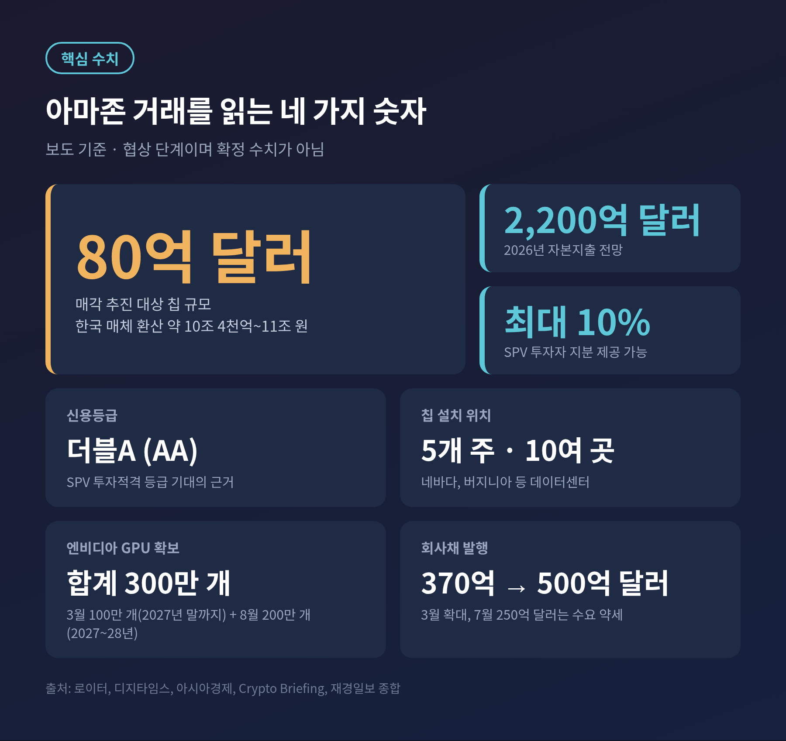
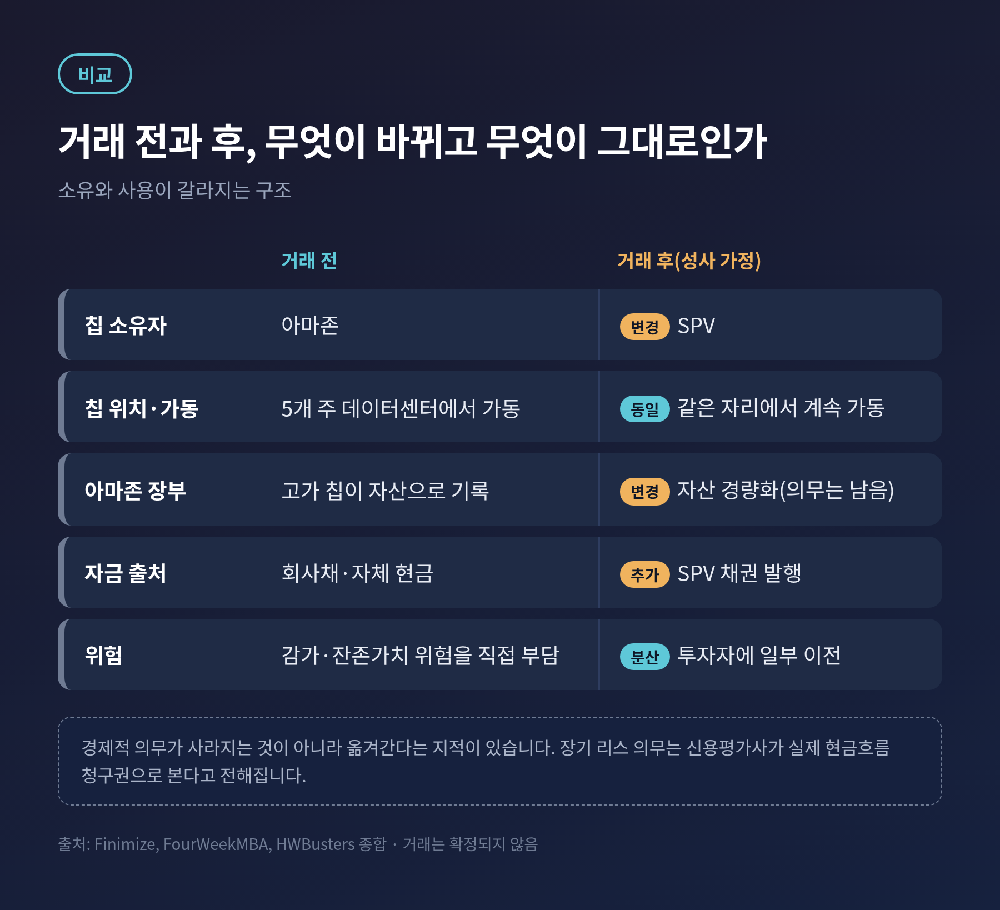
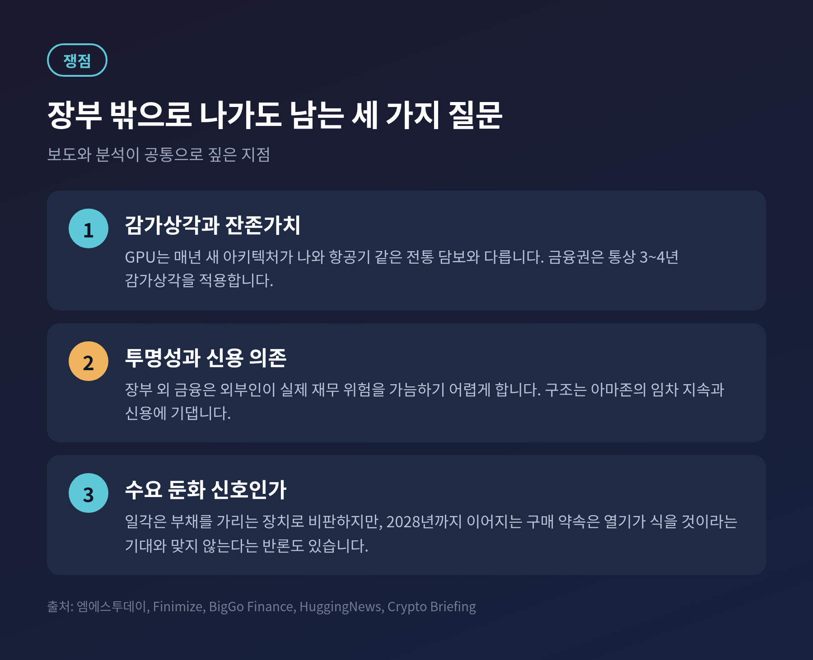
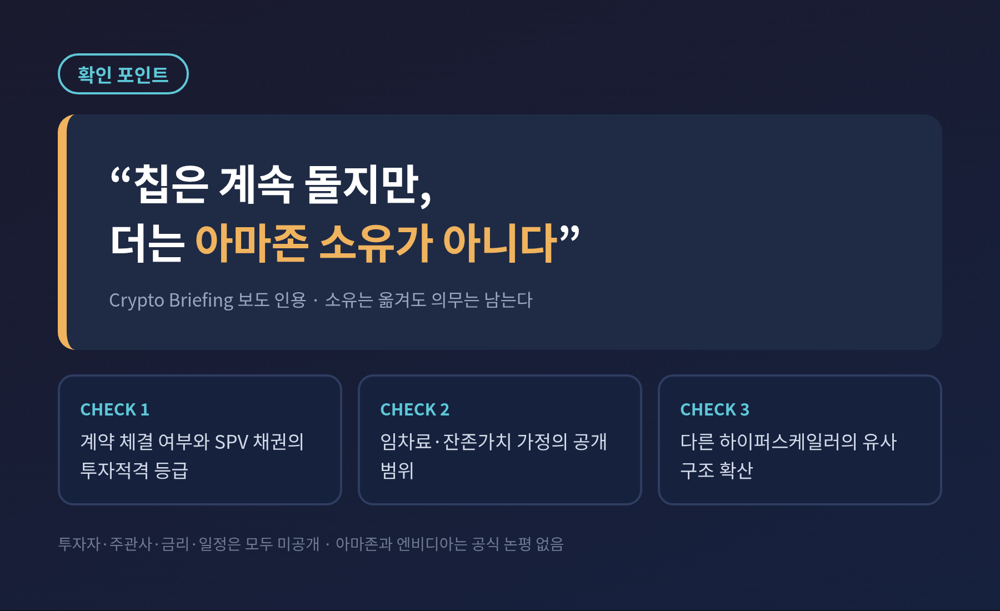

오늘은 아마존이 엔비디아 AI 칩 약 80억 달러어치를 팔았다가 다시 빌려 쓰려 한다는 소식을 정리해 보려 합니다. 칩은 그 자리에서 계속 돌아가고, 바뀌는 것은 주인뿐입니다. 이 거래가 왜 나왔고 무엇을 뜻하는지 차례로 살펴보겠습니다.
3줄 요약
1. 아마존이 미국 데이터센터의 엔비디아 그레이스 블랙웰 칩 약 80억 달러(한국 매체 환산 약 10조~11조 원)를 특수목적법인(SPV)에 넘기고 다시 임차하는 방안을 추진 중입니다.
2. 올해 약 2,200억 달러에 이르는 자본지출과 AA 신용등급을 함께 관리하려는 선택으로 읽힙니다.
3. 아직 확정된 거래가 아니며, 아마존과 엔비디아는 공식 논평을 내놓지 않았습니다.
2026년 10월 1일 파이낸셜타임스(FT)가 보도하고 로이터가 이를 전했습니다. 아마존이 엔비디아의 그레이스 블랙웰 AI 칩 약 80억 달러어치를 외부 투자자에게 넘기는 방안을 검토한다는 내용입니다.
구조는 이렇습니다. 먼저 SPV를 하나 만듭니다. SPV가 채권을 발행해 투자자금을 모으고, 그 돈으로 칩을 사들입니다. 아마존은 같은 칩을 다시 빌려 AWS 데이터센터에서 계속 사용합니다. 금융권에서 말하는 세일 앤드 리스백, 곧 팔고 되빌리는 방식입니다.
대상 칩은 네바다와 버지니아를 포함한 미국 5개 주, 10여 곳 이상의 데이터센터에 이미 설치돼 있습니다. 수천 개 규모로 전해지지만 정확한 수량은 공개되지 않았습니다. 외부 투자자에게는 SPV 지분 최대 10%를 줄 수 있다고 합니다. 한국 매체들은 환율에 따라 약 10조 4천억 원에서 11조 원까지로 환산했습니다.

핵심은 돈입니다. 아마존의 2026년 자본지출은 약 2,200억 달러, 우리 돈으로 280조 원대로 전망됩니다. 대부분이 AWS 클라우드와 AI 데이터센터에 들어갑니다.
예전에는 데이터센터를 짓는 일이 클라우드 기업의 기본기였습니다. 지금은 칩 한 장 값이 그 기본기를 흔드는 변수가 됐습니다. 엔비디아 GPU는 비싸고, 새 세대가 나오면 값이 빠르게 내려갑니다. 장부에 자산으로 쌓아 두는 것 자체가 부담이라는 뜻입니다.
자금 조달 환경도 녹록지 않았습니다. 보도에 따르면 아마존은 3월 회사채 발행 규모를 370억 달러에서 약 500억 달러로 늘렸고, 7월에는 250억 달러를 발행하면서 장기물 수요가 약해 더 높은 금리를 감수해야 했습니다. 빚을 더 내는 길이 점점 비싸지고 있다는 신호입니다.
그렇다고 투자를 줄이기도 어렵습니다. AI 서비스 수요를 받아 낼 연산 자원을 먼저 확보해야 경쟁에서 밀리지 않기 때문입니다. 결국 속도는 유지하고 재무 부담만 덜어 보겠다는 계산이 이번 구상의 바탕에 있는 것으로 보입니다. 장부에 오르는 자산의 크기가 곧 신용평가의 잣대가 되는 만큼, 같은 칩이라도 어디에 기록되느냐가 숫자를 달리 보이게 합니다.

겉으로 보면 모순입니다. 아마존은 3월 19일 엔비디아로부터 2027년 말까지 GPU 100만 개를 받기로 했다고 알려졌고, 8월 26일에는 2027~2028년 배치용으로 200만 개를 더 사기로 했습니다. 합계 300만 개입니다. 가격은 공개되지 않았습니다.
사면서 동시에 판다는 이야기입니다. 이 모순은 소유와 사용을 분리하면 풀립니다. 아마존에 필요한 것은 칩이 돌아가는 시간이지, 칩의 소유권이 아닙니다. 소유권을 SPV에 넘기면 장부상 자산과 부채가 가벼워지고, 연산 능력은 그대로 유지됩니다. 이른바 자산 경량화입니다.
여기에 신용등급이 얽혀 있습니다. 아마존의 신용등급은 더블A입니다. SPV가 이 신용을 바탕으로 투자적격 등급을 받을 것으로 기대되고, 그러면 보험사나 연기금처럼 보수적인 투자자도 참여할 수 있습니다. 아마존 입장에서는 등급을 지키면서 자금을 끌어오는 길입니다.
아마존은 엔비디아에만 기대지 않습니다. 자체 AI 칩 트레이니엄과 범용 칩 그래비톤을 개발하고 있고, 자체 칩 사업의 연환산 매출이 250억 달러 수준이라는 소개도 있습니다. 그래도 당장의 수요는 엔비디아 GPU가 채웁니다. 자체 칩이 따라잡는 동안에는 외부 칩을 계속 사들이되 그 비용을 분산하는 수밖에 없습니다.
선례도 있습니다. 메타는 지난해 루이지애나 하이페리온 데이터센터 단지를 블루아울 캐피털과의 합작법인으로 조달해, 부채 대부분을 자사 장부 밖에 두었습니다. 다만 데이터센터 건물이 아니라 GPU 가속기에 이 방식을 적용하는 것은 새로운 시도라는 평가입니다.

첫 번째 쟁점은 감가상각입니다. 항공기나 건물과 달리 GPU는 매년 새 아키텍처가 나옵니다. 금융권은 통상 3~4년의 감가상각을 적용합니다. 담보로 삼는 칩의 값이 만기 전에 크게 떨어질 수 있다는 이야기입니다. 한 국내 매체는 GPU가 장기 금융자산이 되려면 안정적인 임대수익과 잔존가치를 입증해야 한다고 짚었습니다. 그레이스 블랙웰도 곧 베라 루빈에 자리를 내줄 세대입니다. 다만 학습이 아닌 다른 용도로 계속 쓰일 수 있고, 아마존은 세대별 최소 5년을 활용한다고 본다는 보도가 있었습니다. 이 부분은 단일 보도라 단정하기는 어렵습니다.
두 번째는 투명성입니다. 해외 분석에서는 이 거래가 경제적 의무를 없애는 것이 아니라 옮기는 것이라고 지적합니다. 장기 리스 의무는 신용평가사가 실제 현금흐름에 대한 청구권으로 본다는 설명입니다. 장부 밖 금융은 외부인이 빅테크의 실제 재무 위험을 가늠하기 어렵게 만듭니다. 일부에서는 이를 부채를 가리는 장치, 혹은 절박함의 신호라고까지 부릅니다.
반대 시각도 있습니다. 2028년까지 이어지는 칩 구매 약속은 열기가 식기를 기대하는 회사의 행동이 아니라는 해석입니다. 지지하는 쪽은 비싼 하드웨어를 감당하는 실용적 자금 조달이라고 봅니다. 어느 쪽이 맞는지는 이 글을 쓰는 시점에서 알 수 없습니다.
투자자 쪽에서 보면 이야기가 또 다릅니다. SPV 채권은 아마존의 리스료를 뒷받침으로 하고 고급 AI 칩을 담보로 하는 새로운 유형의 자산유동화 채권이 됩니다. AI 하드웨어에 직접 투자하는 통로가 열리는 셈이지만, 수익은 아마존이 끝까지 임차를 이어 가는 데 달려 있습니다. 아마존의 신용에 기대는 구조라는 점을 투자자가 어떻게 값매길지가 관건입니다.

확인되지 않은 사항이 많습니다. 투자자와 주관사가 누구인지, 금리와 리스 기간은 어떤지, 언제 마무리되는지 공개된 바가 없습니다. 칩이 아마존이 산 것인지 빌린 것인지도 불분명하고, 수치는 서명 전에 바뀔 수 있습니다. 협상은 수 주째 이어졌고 투자자 관심을 타진하는 단계라고 합니다.
앞으로 지켜볼 지점은 세 가지입니다.

정리하면 이렇습니다. 아마존의 선택은 AI 투자 경쟁에서 칩을 얼마나 많이 사느냐 못지않게, 그 칩을 어떻게 조달하느냐가 승부가 되고 있음을 보여 줍니다.
"칩은 그대로 돌고, 주인만 바뀝니다."
그 주인이 바뀐 뒤에도 비용을 치르는 쪽은 결국 누구인지, 시장은 앞으로 몇 달에 걸쳐 그 답을 계산하게 될 것입니다.